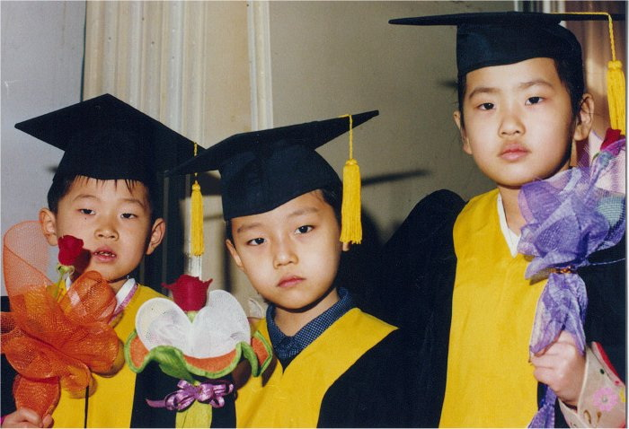
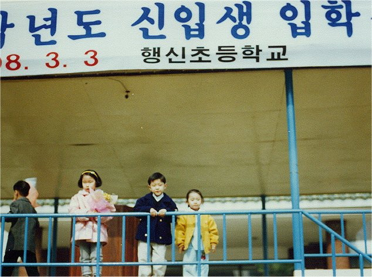
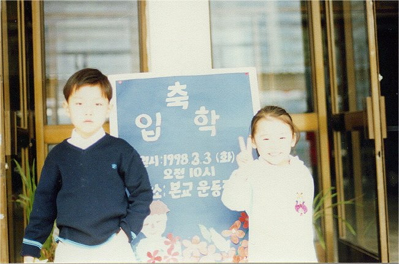
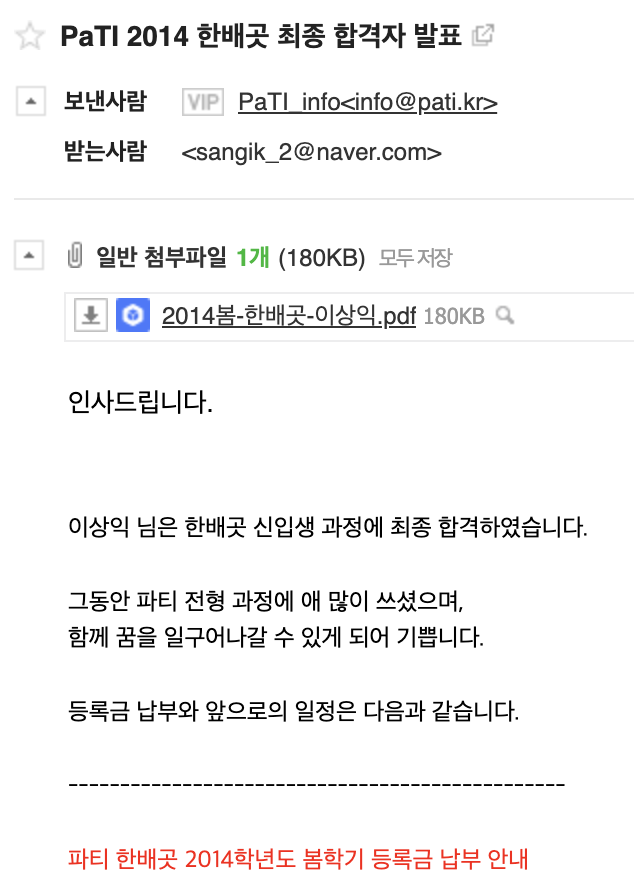
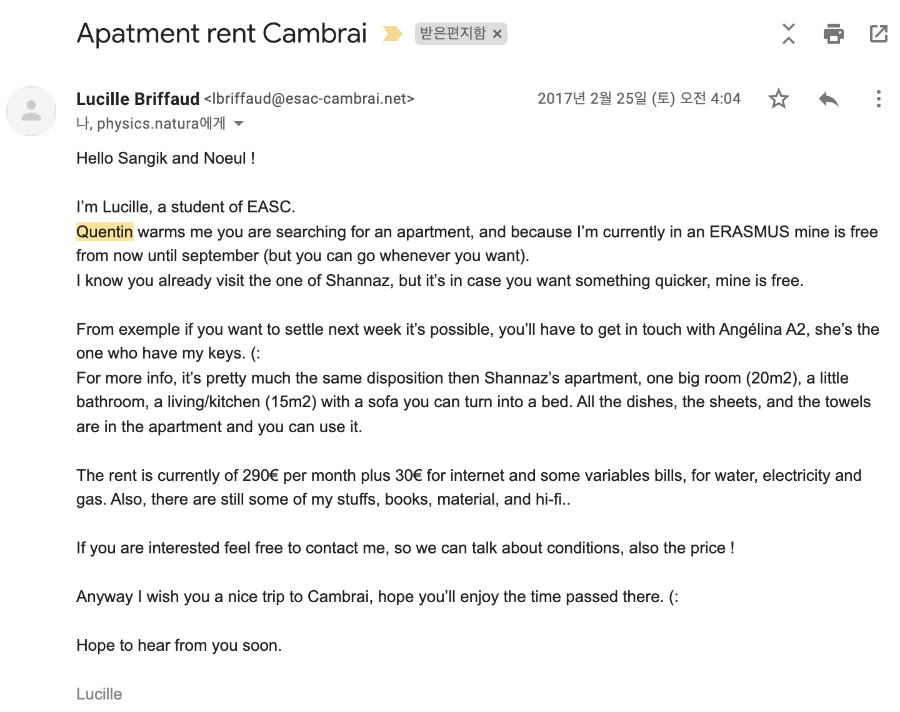
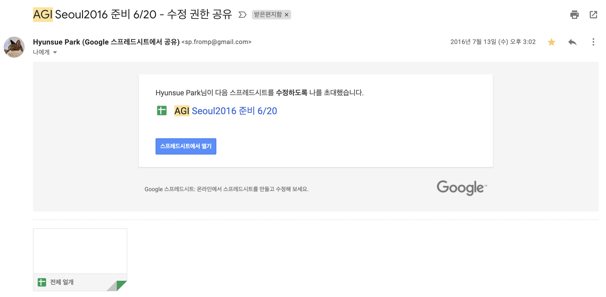
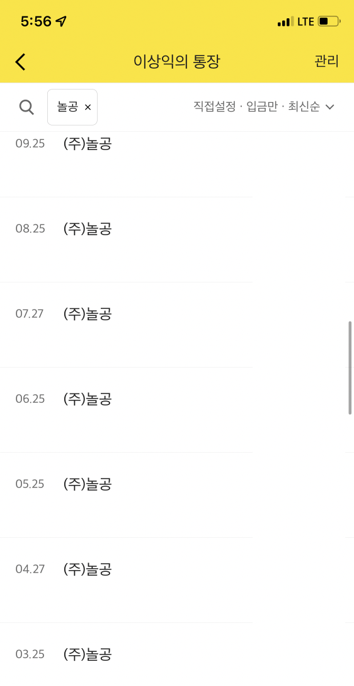
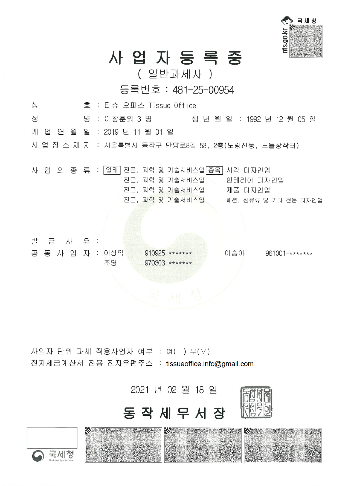
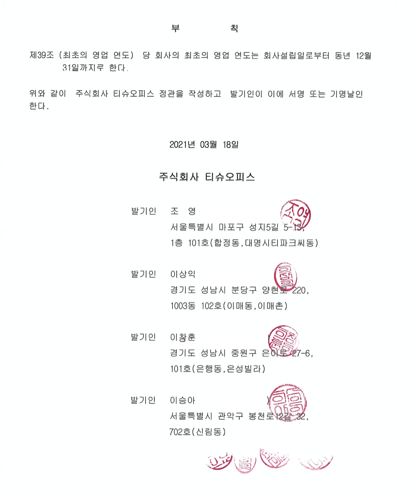

이상익의 약력
작성일자: 2022.1.15 (토)
학력
1998.2 행신초등학교 병설 유치원 졸업
클릭하면 증거가 나옵니다.

1998.3~1998.12
행신초등학교
입학
클릭하면 증거가 나옵니다.
 
1999.3~2000.12
토월초등학교
재학
2001.3~2002.6
불곡초등학교
재학
2002.9~2003.2
하탑초등학교
졸업
2004.2~2007.2
이우중학교
졸업
2007.3~2010.2
이우고등학교
졸업
2014.3~2018.2
파주타이포그라피학교
한배곳 졸업
클릭하면 증거가 나옵니다.

2017.3~2017.6
École supérieure d’art de Cambrai
교환학생
클릭하면 증거가 나옵니다.

병역
2012.4~2014.1.3
제5보병사단육군
병장 전역
경력
2016.1~2016.10
AGI(국제그래픽연맹, Alliance Graphique Internationale)
Seoul 2016 사무국 재직
클릭하면 증거가 나옵니다.

2017.1~2017.2
주식회사 놀공
인턴
2018.1~2021.2
주식회사 놀공
재직
클릭하면 증거가 나옵니다.

2019.11
티슈 오피스
개인사업자 설립
클릭하면 증거가 나옵니다.

2021.3
티슈 오피스
주식회사 설립
클릭하면 증거가 나옵니다.

관련 링크
개인 인스타그램
재직 중인 회사 인스타그램
좋아하는 게임
좋아하는 게임
좋아하는 음악
존경하는 인물